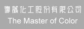

公司簡介
負責人介紹
銷售產品
生產化驗
原料產品品嘗
經營特色
專業服務
產品型錄
公司負責人 : 陳皇瑞
民國74年6月21成立。
民國74~77年，第一階段 : 塑膠、塗料之大宗基礎原物料隻買賣
民國77~79年，第二階段 : 從大宗原物料，在進入高分子塑膠、塗料、橡膠之添加劑
民國79~82年，第三階段 : 再從高分子化學進入顏料、染料之領域
民國82~迄今，第四階段 : 各類加工、各類墊子化學、陽極金屬處領域及迄今顏染料子電鑄、電化功能性染料